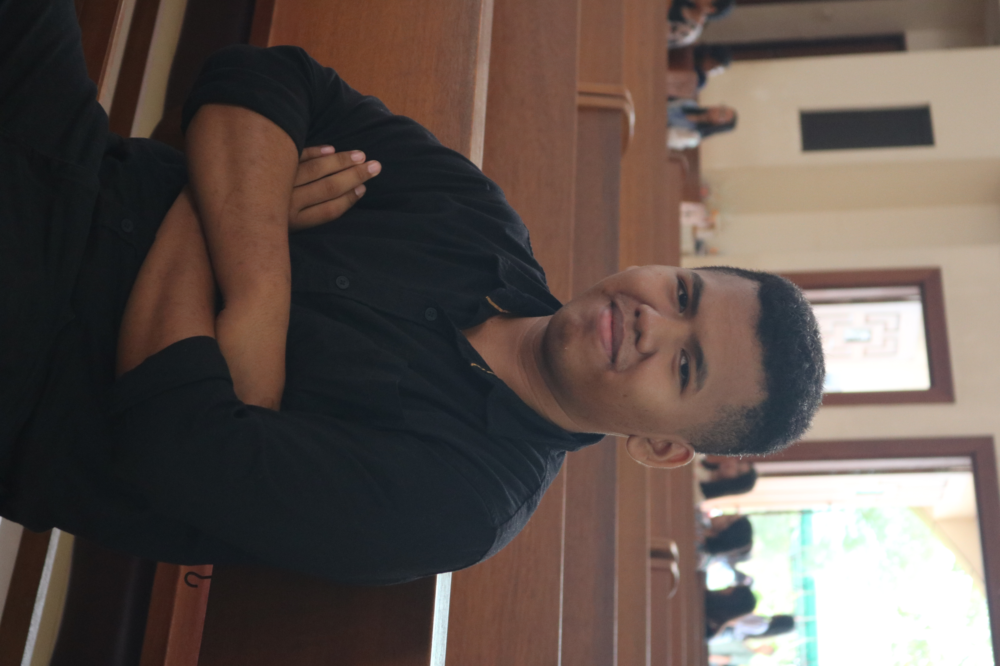

Artist Profile
Di Balik Lensa

| Nama Lengkap | Christiano Satriani De Moza |
| Kelahiran | Batam, 07 Agustus 2004 |
| Pendidikan | Sistem Informasi, UIB |
| Visi Seni | "Menangkap keheningan di setiap momen yang berlalu." |
| Spesialisasi | Fine Art & Landscape Photography |